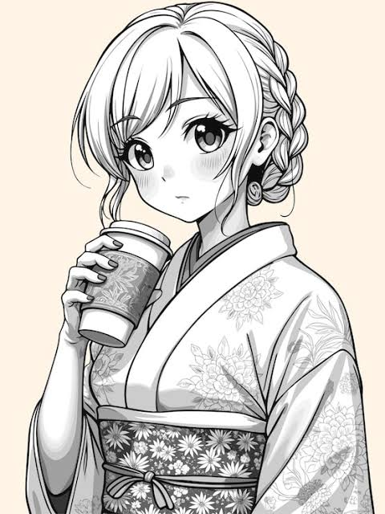
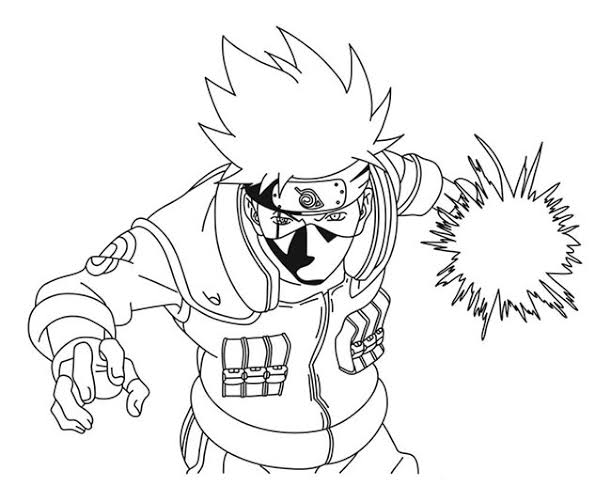
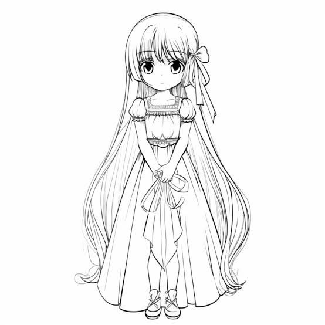
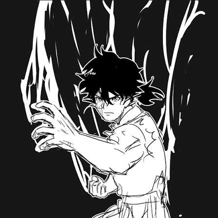
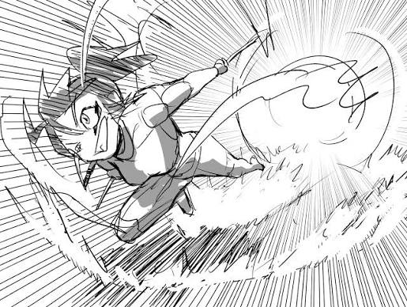
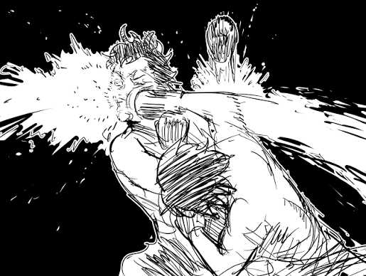
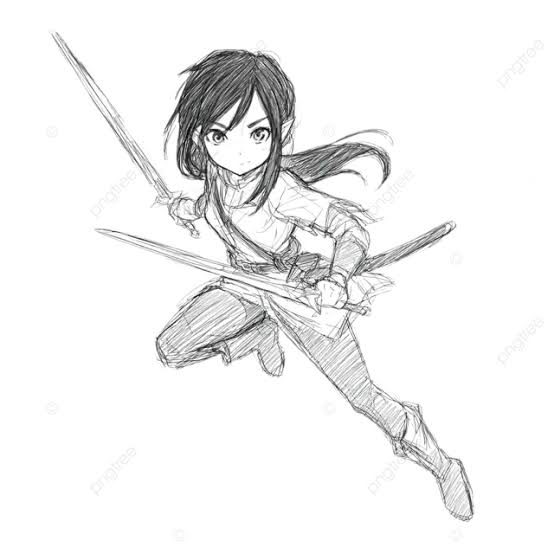
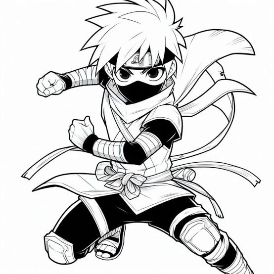

Geek store
Encontre aqui os mangás perfeitos para você!
Uma loja completa com todos os tipos de mangá possíveis
GS
Geek store
Uma loja completa com todos os tipos de mangá possíveis
Explorar
Em um mundo onde as estrelas não são corpos celestes, mas imensas esferas de bronze...
Na sufocante metrópole de Neo-Quioto, onde memórias humanas são extraídas e negociadas...

Ocupando um beco esquecido no distrito de Asakusa, a padaria Tsukimi abre suas portas...

Aos quinze anos, Haruto era considerado o rebatidor prodígio mais promissor do beisebol...

No final do período Edo, entre ruelas cobertas por névoa e lanternas de papel, existe uma...

Tudo começou com pequenos atrasos: reflexos em espelhos de elevadores e janelas de ônibus...

Kaito e Rina são dois pesquisadores de inteligência artificial extremamente introvertidos que...

Com o decreto de proibição do uso de espadas no Japão de 1876, o envelhecido ronin Genjuro...

Em um asteroide oco convertido em um colégio interno de elite na órbita de Saturno, os alunos...

+ mais